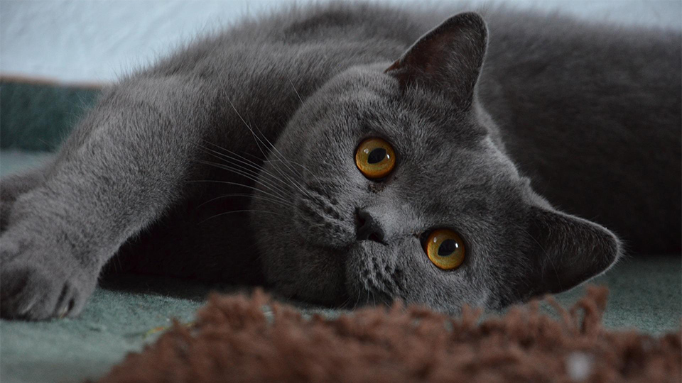
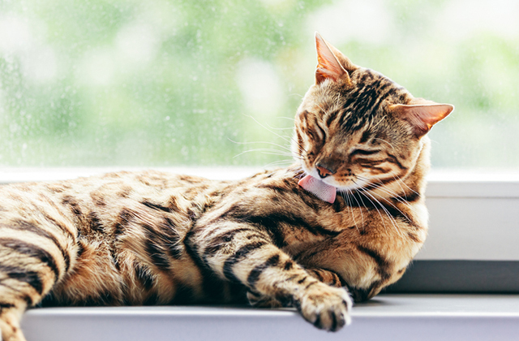
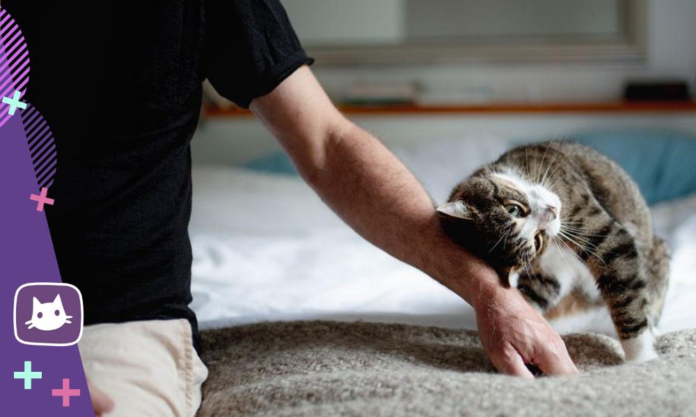
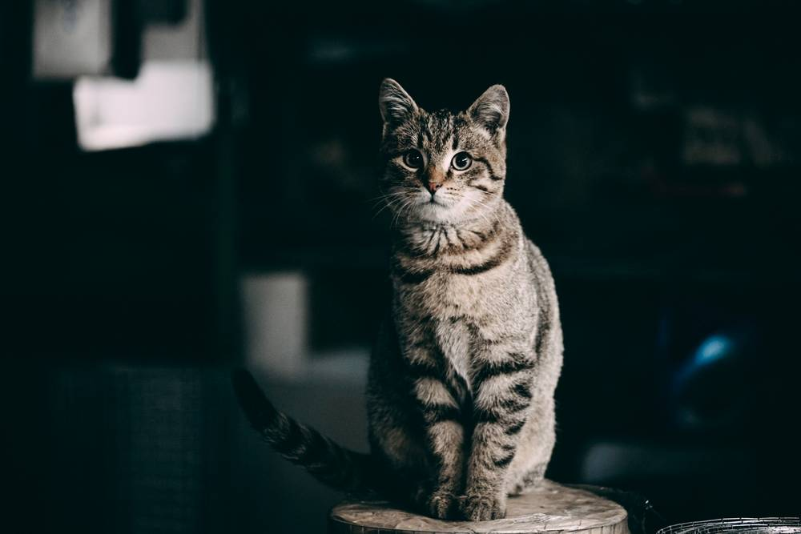
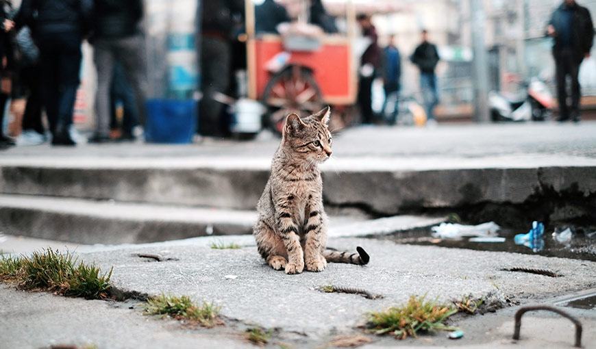
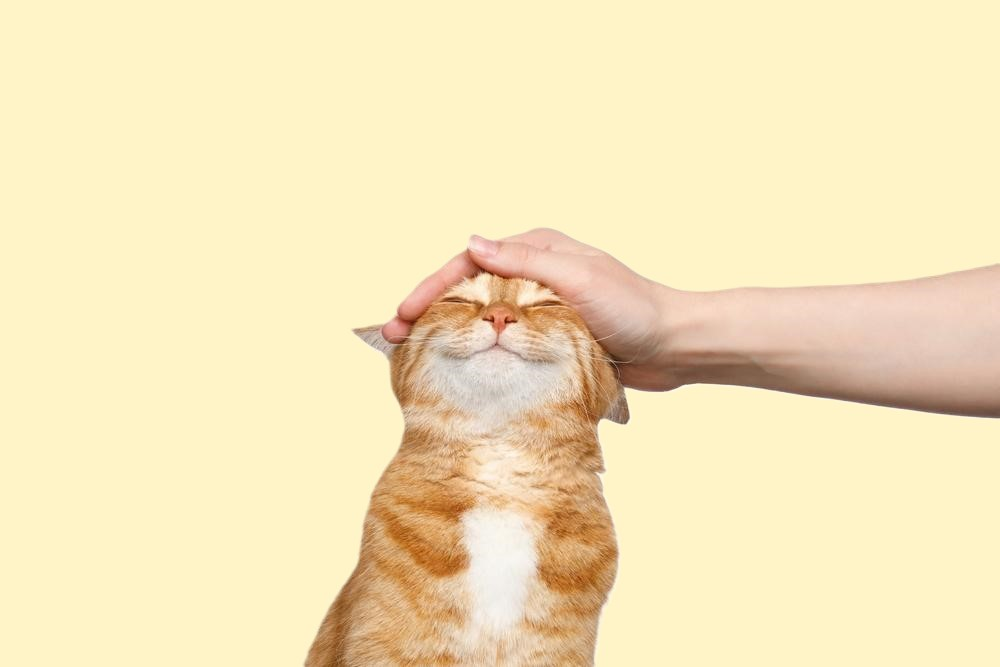

Поведение

Почему британские кошки злые?
Поведение кошки связано как с породными особенностями, так и является следствием..

Почему кошки часто умываются?
Кошачьих поистине считают настоящими чистюлями животного мира, поскольку почти..

Почему кошки бодаются головой?
Темперамент разных любимцев настолько отличается, что у одного владельца при одинаковом воспитании..

Кошки – ночные или дневные животные?
Поведение кошки связано как с породными особенностями, так и является следствием..

Как кошки находят дорогу домой издалека?
Многочисленные исследования специалистов и истории, рассказанные владельцами, подтверждают, что поте..
